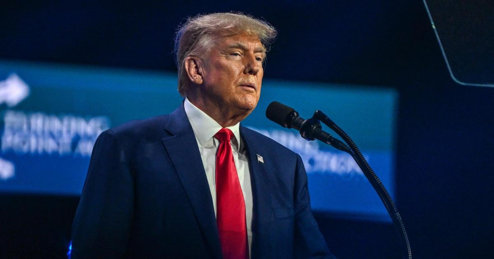

Trump indicted by grand jury in special counsel Jack Smith's Jan. 6 investigationWashington — Former President Donald Trump by a federal grand jury on charges stemming from his efforts to remain in power after he lost the 2020 presidential election, adding to the former president's ongoing legal troubles as he mounts a third bid for the White House. According to the indictment handed up Tuesday by a federal grand jury, Trump faces four charges: conspiracy to defraud the United States; conspiracy to obstruct an official proceeding; obstruction of and attempt to obstruct an official proceeding; and conspiracy against rights. , in announcing the charges Tuesday, called what happened on Jan. 6, 2021, an "unprecedented assault" on democracy. "It was fueled by lies: Lies by the defendant targeted at obstructing a bedrock function of the U.S. government — the nation's process of collecting, counting and certifying the results of the presidential election." The indictment says of Trump that despite having lost, he "was determined to remain in power." So, for over two months after the election, Trump "spread lies that there had been outcome-determinative fraud in the election and that he had actually won," the indictment states, and adds, "These claims were false, and the defendant knew they were false," but "repeated and widely disseminated them anyway." Six unnamed co-conspirators are alleged by the indictment to have been "enlisted" to assist Trump in "his criminal efforts to overturn" the election "and retain power." Trump and his co-conspirators allegedly "pushed officials to ignore the popular vote" and "organized " in Arizona, Georgia, Michigan, Nevada, New Mexico, Pennsylvania and Wisconsin, according to the indictment. The indictment accuses Trump and his co-conspirators of using "knowingly false claims of election fraud" in organizing the fraudulent slates of electors. Prosecutors allege Trump and his co-conspirators also attempted to use the power of the Justice Department to conduct "sham election crime investigations," and attempted to enlist then-Vice President Mike Pence to use in affirming the electoral vote count on Jan. 6 to "fraudulently alter the election results." The indictment also alleges to fraudulently reject or return Mr. Biden's electoral votes. "After it became public on the afternoon of January 6 that the vice president would not fraudulently alter the election results, a large and angry crowd — including many individuals whom the defendant had deceived into believing the vice president could and might change the election results — violently attacked the Capitol and halted the proceeding," the indictment says. In a detailed accounting, the indictment claims Trump watched the violence unfolding on television, and ignored pleas to unequivocally condemn the violence. The indictment makes it clear that Pence is a key witness in the case, and prosecutors say Pence took extensive, contemporaneous notes. The vice president is one of Trump's opponents for the Republican presidential nomination in 2024. The grand jury did not indict Trump on any specific charges related to inciting an insurrection, former Trump impeachment manager Democratic Rep. Jamie Raskin pointed out to CBS News. From "about November 14, 2020" through , Jan. 20, 2021, the indictment says, in Washington, D.C., "and elsewhere," "Trump, did knowingly combine, conspire, confederate, and agree with co-conspirators, known and unknown to the grand jury, to injure, oppress, threaten, and intimidate one or more persons in the free exercise and enjoyment of a right and privilege secured to them by the Constitution and laws of the United States — that is, the right to vote, and to have one's vote counted." Trump has been summoned to appear at 4 p.m. ET on Thursday before Magistrate Judge Moxila A. Upadhyaya at the federal courthouse in Washington, D.C. The Trump campaign said in a statement that the indictment was "the latest corrupt chapter in the continued pathetic attempt by the Biden Crime Family and their weaponized Department of Justice to interfere with the 2024 Presidential Election." The former president's campaign questioned why it took "two and a half years" to bring the charges, during the presidential campaign. It also claimed that Trump "always followed the law… with advice from many highly accomplished attorneys." Pence released a statement saying, "Today's indictment serves as an important reminder: anyone who puts himself over the Constitution should never be President of the United States." He said he'd have more to say about the case after he reviews the indictment but added, "The former president is entitled to the presumption of innocence but with this indictment, his candidacy means more talk about January 6th and more distractions." Smith said his office would "seek a speedy trial." but it is not yet clear when a trial in this case would take place. Trump is already supposed to stand trial on state criminal charges in New York in March, and on over his handling of classified documents — during the height of primary season, and as it's coming to a close. Trump revealed in mid-July that he informing him that he was the target of the investigation into the events leading up to the Jan. 6, 2021, assault on the U.S. Capitol. His lawyers at special counsel Jack Smith's office in Washington last Thursday morning, and Trump, who is at his residence in Bedminster, New Jersey, said in a post to his social media platform that the meeting was "productive" and his attorneys explained he "did nothing wrong." Overseen by Smith, the probe has focused on the attempts to thwart the transfer of power after the November 2020 presidential election or interfere with the certification of Electoral College votes on Jan. 6. That proceeding of a joint session of Congress was disrupted when a mob of Trump's supporters . While federal prosecutors have of violating the law with their actions on Jan. 6, the charges against the former president mark the first federal prosecution concerning the multiple ways Trump and his allies allegedly attempted to keep him in office despite losing the election. It's unclear whether other key figures in the scheme to reverse the outcome of the election will be charged on the federal level. Michigan's attorney general who falsely claimed to be presidential electors for Trump with multiple state felonies in July. The indictment against Trump is the second sought by Smith in recent weeks. The former president is facing related to his of sensitive government documents retrieved from his South Florida residence, Mar-a-Lago, after he left the White House. Trump to all charges, which include conspiracy, obstruction and willfully retaining national defense information. In addition to the now two federal prosecutions, a Manhattan grand jury on 34 felony counts related to alleged hush-money payments made to an adult film star before the 2016 presidential election. A trial in that case is in March. New York's attorney general has against Trump and his eponymous company, with a trial set to begin in October. Trump is also from the top prosecutor in Fulton County, Georgia, who has been investigating efforts to reverse the outcome of the presidential election in the state. Trump has claimed the investigation is politically motivated and denies wrongdoing. for more features. |
 |